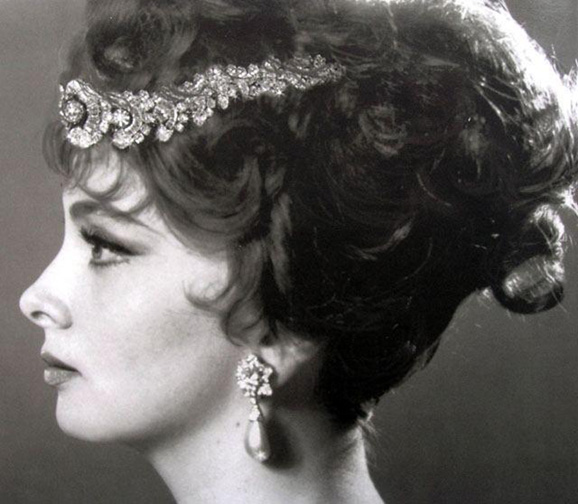
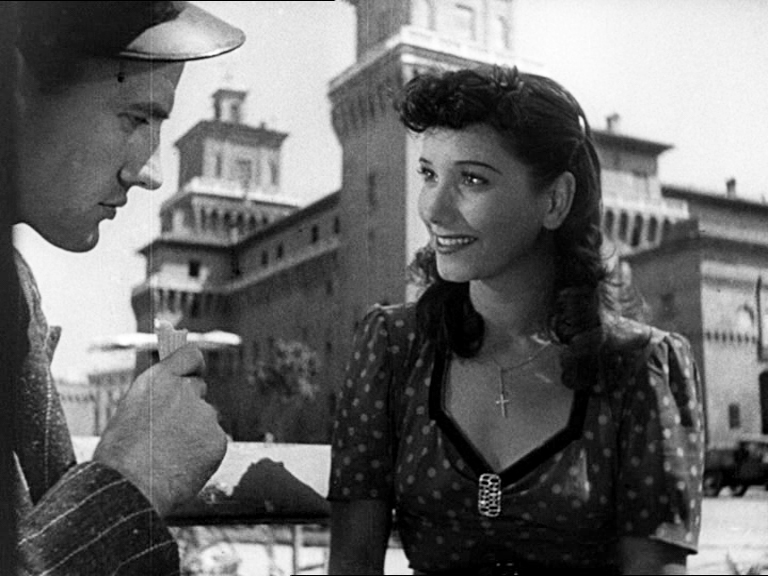

Motion Pictures
- 
Gina Lollobrigida

Sergio Leone
- 
Italian Neorealism

Taviani Brothers
The Italian film industry was born between 1903 and 1908 with three companies: the Roman Società Italiana Cines, the Ambrosio Film and the Itala Film in Turin. Other companies soon followed in Milan and in Naples. The early Italian film industry became internationally known for its historical spectacles. But during the World War I, Italy like other European governments, diverted raw material from their film industries to military needs. Few major motion pictures were produced during the 1920s and 1930s, but a renaissance of Italian filmmaking developed in the 1940s. At that time, a new generation of directors emerged. They included Vittorio De Sica, Roberto Rossellini, and Luchino Visconti. The impact of the war led several of these directors to make movies that focused on society and its problems. This impulse resulted in the emergence of the first important postwar European film movement, Neorealism. Neorealist directors were concerned primarily with portraying the daily life of ordinary people. They mainly filmed on location rather than on a studio set, and they used mostly nonprofessional actors. These qualities gave Neorealist films a gritty, almost documentary look. During the 1950s and 1960s, earthy comedies gained international success, due partly to the popularity of Italian movie stars Gina Lollobrigida, Sophia Loren, and Marcello Mastroianni. In the same years, Sergio Leone helped create a new film genre, ironically nicknamed the "Spaghetti Western", because they were made by Italian directors, either in Italy, Spain, or even in the famous Monument Valley Studios in the United States. At the same time, a new group of directors won praise. The most significant were Michelangelo Antonioni, Federico Fellini and Pier Paolo Pasolini. Vittorio De Sica, Roberto Rossellini, and Luchino Visconti also continued to film major works. During the late 20th century, the leading Italian directors included Roberto Benigni, Marco Bellocchio, Bernardo Bertolucci, and the brothers Paolo and Vittorio Taviani.